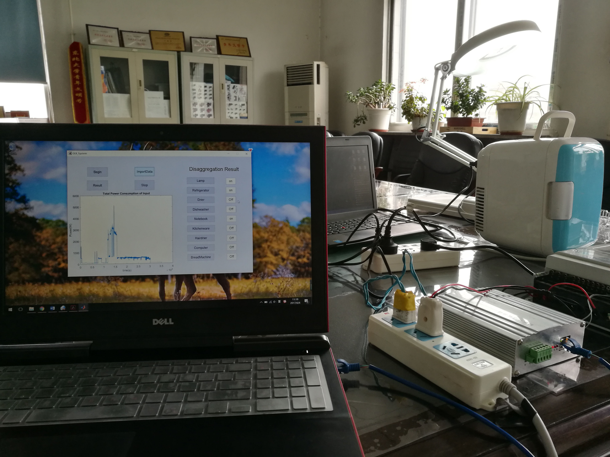
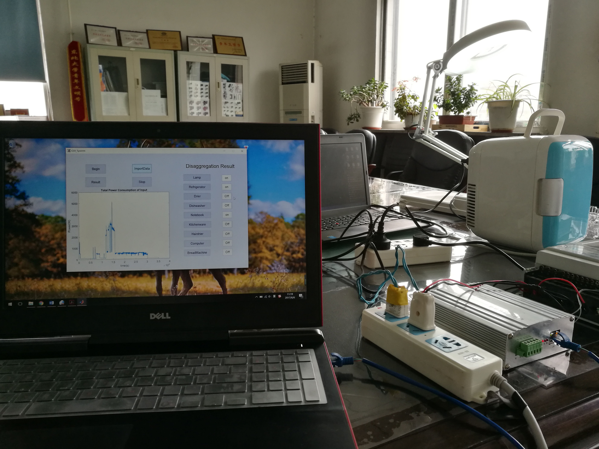

Sen Wang

Research
Several project experiences are introduced below.
Calligraphy Robots
Chinese calligraphy is a unique form of art that has great artistic value but is difficult to master. In this paper, we make robots write calligraphy by formulating the calligraphy writing problem as a trajectory optimization problem, and propose a new virtual brush model for simulating the real dynamic writing process. Our optimization approach is taken from pseudospectral optimal control, where the proposed dynamic virtual brush model plays a key role in formulating the objective function to be optimized. We also propose a stroke-level optimization to achieve better performance compared to the character-level optimization proposed in previous work. The figure on the left shows the comparision of initial estimation and final optimization results.
Publication:
[1] (submitted) S. Wang, J. Chen, X. Deng, S. Hutchinson, F. Dellaert, "Robot Calligraphy using Pseudospectral Optimal Controlin Conjunction with a Simulated Brush Model", in ICRA 2019. [PDF]


Non-intrusive Load Monitoring (NILM)
NILM is mainly about finding the different working states of home electronics from only their total power consumption. Electtronics such as television, refrigerator generally have some non-regular consumption pattern with big randomness (like the figure shows), however, the problem could be approached with the proposed analyzation tools. In this paper, we propose a new method based on kernel density estimation(KDE) for low frequency NILM (Non-intrusive load monitoring). The power consumption features of different kinds of electronic application are estimated from kernel density estimation. After it, we establish a simulated dataset which stores the power consumption signal of different combinations of electronic application. Now, given the total power consumption data over a period, we divide it into different stages by detecting step changes, and use a brute-force searching to match each divided stage with the simulation data to find the corresponding power consumption pattern. The proposed approach was tested with data from the GREEND public dataset, it showed good performance (93% accuracy) in the tested data.
Publication:
[1] Wang Sen, Yang Dongsheng, Guo Chuchen, "Du Shengxian, Non-intrusive Load Disaggregation Based on Kernel Density Estimation" IOP Conference Series 2017 [PDF]
 

Action Recognition
NILM is mainly about finding the different working states of home electronics from only their total power consumption. Electtronics such as television, refrigerator generally have some non-regular consumption pattern with big randomness (like the figure shows), however, the problem could be approached with the proposed analyzation tools. In this paper, we propose a new method based on kernel density estimation(KDE) for low frequency NILM (Non-intrusive load monitoring). The power consumption features of different kinds of electronic application are estimated from kernel density estimation. After it, we establish a simulated dataset which stores the power consumption signal of different combinations of electronic application. Now, given the total power consumption data over a period, we divide it into different stages by detecting step changes, and use a brute-force searching to match each divided stage with the simulation data to find the corresponding power consumption pattern. The proposed approach was tested with data from the GREEND public dataset, it showed good performance (93% accuracy) in the tested data.
Publication:
[1] Wang Sen, Yang Dongsheng, Guo Chuchen, "Du Shengxian, Non-intrusive Load Disaggregation Based on Kernel Density Estimation" IOP Conference Series 2017 [PDF]
Gallery One